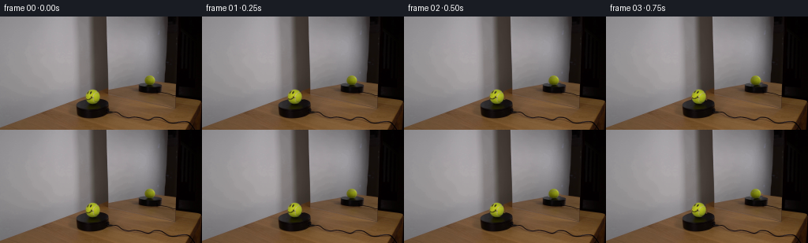
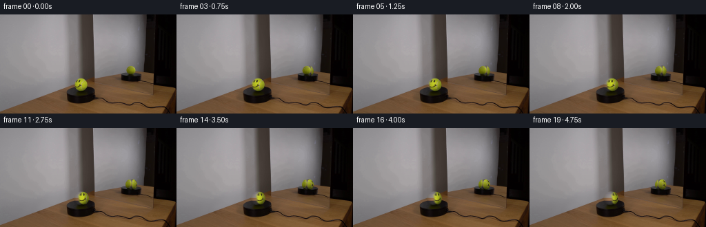
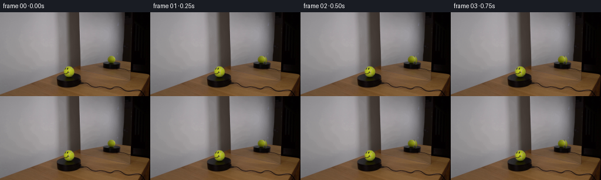

CODING AGENTS AS PIXEL WORLD MODELS
traex/GPT-5.6-Sol · 0119
点击播放 · 原生 RGB 像素
逐轮保存的候选
回放视频、检查图与代码变化。
每份候选均可单独播放。实际图片检查记录在下方工具轨迹中。
候选 01播放与检查图
点击播放 · 原生 RGB 像素

展开代码变化
--- 上一保存版本
+++ 本次保存版本
@@ -0,0 +1,135 @@
+"""Generate the requested locked-off tennis-ball rotation sequence.
+
+The source is deliberately treated as photographed material rather than being
+redrawn. Within each ball silhouette, high-frequency surface appearance is
+rotated at sub-pixel precision while broad illumination is held in place. The
+latter matters here because simply rotating the crop would incorrectly move
+the ball's strong lower shadow around its circumference.
+"""
+
+from pathlib import Path
+
+import cv2
+import numpy as np
+from PIL import Image
+
+import artifact_io
+
+
+CASE_DIR = Path(__file__).resolve().parent
+
+
+def smoothstep(edge0: float, edge1: float, x: np.ndarray) -> np.ndarray:
+ t = np.clip((x - edge0) / (edge1 - edge0), 0.0, 1.0)
+ return t * t * (3.0 - 2.0 * t)
+
+
+def rotate_surface(
+ source: np.ndarray,
+ center: tuple[float, float],
+ radius: float,
+ angle: float,
+ blur_sigma: float,
+) -> np.ndarray:
+ """Rotate photographed detail inside one circular ball silhouette.
+
+ ``angle`` is positive for visually clockwise rotation. A smooth luminance
+ field is factored out before the warp and restored afterwards, keeping the
+ original laboratory lighting and contact shadow stationary.
+ """
+ h, w = source.shape[:2]
+ cx, cy = center
+
+ # Restrict all filtering and resampling to a compact area around the ball.
+ pad = int(np.ceil(radius + 5.0 * blur_sigma + 3.0))
+ x0 = max(0, int(np.floor(cx)) - pad)
+ x1 = min(w, int(np.floor(cx)) + pad + 1)
+ y0 = max(0, int(np.floor(cy)) - pad)
+ y1 = min(h, int(np.floor(cy)) + pad + 1)
+ crop = source[y0:y1, x0:x1].astype(np.float32)
+
+ yy, xx = np.mgrid[y0:y1, x0:x1].astype(np.float32)
+ dx = xx - np.float32(cx)
+ dy = yy - np.float32(cy)
+ c, s = np.float32(np.cos(angle)), np.float32(np.sin(angle))
+
+ # Inverse map for a visually clockwise material rotation in image (y-down)
+ # coordinates. map_* coordinates are local to the extracted crop.
+ map_x = (cx + c * dx + s * dy - x0).astype(np.float32)
+ map_y = (cy - s * dx + c * dy - y0).astype(np.float32)
+
+ warped = cv2.remap(
+ crop,
+ map_x,
+ map_y,
+ interpolation=cv2.INTER_LANCZOS4,
+ borderMode=cv2.BORDER_REFLECT_101,
+ )
+
+ # Separate material markings/felt from the broad, fixed illumination. The
+ # scalar correction retains the transported tennis-ball hue and prevents
+ # the lower shaded hemisphere from spinning up a side of the ball.
+ lum = 0.2126 * crop[..., 0] + 0.7152 * crop[..., 1] + 0.0722 * crop[..., 2]
+ smooth = cv2.GaussianBlur(
+ lum, (0, 0), blur_sigma, borderType=cv2.BORDER_REFLECT_101
+ )
+ warped_smooth = cv2.remap(
+ smooth,
+ map_x,
+ map_y,
+ interpolation=cv2.INTER_LANCZOS4,
+ borderMode=cv2.BORDER_REFLECT_101,
+ )
+ correction = np.clip(smooth / np.maximum(warped_smooth, 3.0), 0.62, 1.58)
+ relit = np.clip(warped * correction[..., None], 0.0, 255.0)
+
+ # A narrow antialiased annulus keeps the photographed silhouette perfectly
+ # still and avoids touching the surrounding mirror/platform pixels.
+ rr = np.sqrt(dx * dx + dy * dy)
+ alpha = 1.0 - smoothstep(radius - 1.15, radius + 0.25, rr)
+ result = source.astype(np.float32).copy()
+ base = result[y0:y1, x0:x1]
+ base[:] = base * (1.0 - alpha[..., None]) + relit * alpha[..., None]
+ return np.clip(np.rint(result), 0, 255).astype(np.uint8)
+
+
+def main() -> None:
+ first = np.asarray(Image.open(CASE_DIR / "first_frame.png").convert("RGB"))
+ if first.shape != (144, 256, 3):
+ raise ValueError(f"unexpected source dimensions: {first.shape}")
+
+ frames = [first.copy()]
+
+ # Constant slow rotation: 15 degrees/second, sampled at the required 4 fps.
+ # The first frame is inserted verbatim above, guaranteeing pixel identity.
+ radians_per_frame = np.deg2rad(15.0 / 4.0)
+ for index in range(1, 20):
+ angle = index * radians_per_frame
+
+ # Foreground ball: the measured silhouette is centered near (118,102).
+ frame = rotate_surface(
+ first,
+ center=(118.0, 102.0),
+ radius=10.85,
+ angle=angle,
+ blur_sigma=2.65,
+ )
+
+ # The mirror image is smaller and reverses rotational handedness. It is
+ # independently sampled from the face-free reflected side in frame 00.
+ frame = rotate_surface(
+ frame,
+ center=(190.0, 82.0),
+ radius=8.85,
+ angle=-angle,
+ blur_sigma=2.15,
+ )
+ frames.append(frame)
+
+ output = np.stack(frames).astype(np.uint8)
+ assert np.array_equal(output[0], first)
+ artifact_io.save(output, CASE_DIR)
+
+
+if __name__ == "__main__":
+ main()
候选 02播放与检查图
点击播放 · 原生 RGB 像素

展开代码变化
--- 上一保存版本
+++ 本次保存版本
@@ -24,70 +24,99 @@
return t * t * (3.0 - 2.0 * t)
-def rotate_surface(
+def render_ball(
source: np.ndarray,
center: tuple[float, float],
radius: float,
angle: float,
- blur_sigma: float,
+ reflected: bool,
+ canvas: np.ndarray | None = None,
) -> np.ndarray:
- """Rotate photographed detail inside one circular ball silhouette.
+ """Render one view of a sphere yawing clockwise on the platform.
- ``angle`` is positive for visually clockwise rotation. A smooth luminance
- field is factored out before the warp and restored afterwards, keeping the
- original laboratory lighting and contact shadow stationary.
+ The front photograph and the face-free side seen in the mirror are treated
+ as two observations of one spherical texture. Longitude is transported
+ analytically. Thus the smile remains upright, travels around the ball, and
+ eventually starts to enter the mirror rather than spinning like a flat
+ sticker. The mirror's horizontal handedness is explicitly reversed.
"""
h, w = source.shape[:2]
cx, cy = center
- # Restrict all filtering and resampling to a compact area around the ball.
- pad = int(np.ceil(radius + 5.0 * blur_sigma + 3.0))
- x0 = max(0, int(np.floor(cx)) - pad)
- x1 = min(w, int(np.floor(cx)) + pad + 1)
- y0 = max(0, int(np.floor(cy)) - pad)
- y1 = min(h, int(np.floor(cy)) + pad + 1)
- crop = source[y0:y1, x0:x1].astype(np.float32)
+ pad = int(np.ceil(radius + 2.0))
+ x0, x1 = max(0, int(cx) - pad), min(w, int(cx) + pad + 1)
+ y0, y1 = max(0, int(cy) - pad), min(h, int(cy) + pad + 1)
yy, xx = np.mgrid[y0:y1, x0:x1].astype(np.float32)
dx = xx - np.float32(cx)
dy = yy - np.float32(cy)
- c, s = np.float32(np.cos(angle)), np.float32(np.sin(angle))
- # Inverse map for a visually clockwise material rotation in image (y-down)
- # coordinates. map_* coordinates are local to the extracted crop.
- map_x = (cx + c * dx + s * dy - x0).astype(np.float32)
- map_y = (cy - s * dx + c * dy - y0).astype(np.float32)
+ # Orthographic sphere parameterization: v is latitude and local_u maps to
+ # longitude while respecting the narrowing horizontal cross-section.
+ v = dy / np.float32(radius)
+ half_width = np.sqrt(np.maximum(1.0 - v * v, 1.0e-5))
+ local_u = np.clip((dx / np.float32(radius)) / half_width, -1.0, 1.0)
+ offset = np.arcsin(local_u)
+ if reflected:
+ longitude = np.float32(np.pi / 2.0 - angle) - offset
+ else:
+ longitude = offset - np.float32(angle)
- warped = cv2.remap(
- crop,
- map_x,
- map_y,
- interpolation=cv2.INTER_LANCZOS4,
- borderMode=cv2.BORDER_REFLECT_101,
- )
+ image = source.astype(np.float32)
+ lum = 0.2126 * image[..., 0] + 0.7152 * image[..., 1] + 0.0722 * image[..., 2]
+ smooth_main = cv2.GaussianBlur(lum, (0, 0), 3.5)
+ smooth_mirror = cv2.GaussianBlur(lum, (0, 0), 2.8)
- # Separate material markings/felt from the broad, fixed illumination. The
- # scalar correction retains the transported tennis-ball hue and prevents
- # the lower shaded hemisphere from spinning up a side of the ball.
- lum = 0.2126 * crop[..., 0] + 0.7152 * crop[..., 1] + 0.0722 * crop[..., 2]
- smooth = cv2.GaussianBlur(
- lum, (0, 0), blur_sigma, borderType=cv2.BORDER_REFLECT_101
- )
- warped_smooth = cv2.remap(
- smooth,
- map_x,
- map_y,
- interpolation=cv2.INTER_LANCZOS4,
- borderMode=cv2.BORDER_REFLECT_101,
- )
- correction = np.clip(smooth / np.maximum(warped_smooth, 3.0), 0.62, 1.58)
- relit = np.clip(warped * correction[..., None], 0.0, 255.0)
+ def sample_view(view: str) -> np.ndarray:
+ if view == "main":
+ # Initial main view is centered on material longitude zero.
+ lam = np.clip(longitude, -1.53, 1.53)
+ map_x = 118.0 + 10.85 * half_width * np.sin(lam)
+ map_y = 102.0 + 10.85 * v
+ src_smooth = smooth_main
+ else:
+ # A plane mirror reverses the projected horizontal coordinate.
+ lam = np.clip(longitude, 0.04, np.pi - 0.04)
+ map_x = 190.0 + 8.85 * half_width * np.sin(np.pi / 2.0 - lam)
+ map_y = 82.0 + 8.85 * v
+ src_smooth = smooth_mirror
+ rgb = cv2.remap(
+ image, map_x.astype(np.float32), map_y.astype(np.float32),
+ cv2.INTER_LANCZOS4, borderMode=cv2.BORDER_REFLECT_101,
+ )
+ broad = cv2.remap(
+ src_smooth, map_x.astype(np.float32), map_y.astype(np.float32),
+ cv2.INTER_LANCZOS4, borderMode=cv2.BORDER_REFLECT_101,
+ )
+ return rgb, broad
+
+ main_rgb, main_broad = sample_view("main")
+ if reflected:
+ side_rgb, side_broad = sample_view("mirror")
+ # The front observation becomes preferable as the smiley-bearing
+ # longitude turns into the mirror. Smooth overlap prevents a seam.
+ front_weight = 1.0 - smoothstep(
+ np.deg2rad(24.0), np.deg2rad(62.0), np.abs(longitude)
+ )
+ sampled_rgb = (main_rgb * front_weight[..., None] +
+ side_rgb * (1.0 - front_weight[..., None]))
+ sampled_broad = (main_broad * front_weight +
+ side_broad * (1.0 - front_weight))
+ else:
+ sampled_rgb, sampled_broad = main_rgb, main_broad
+
+ # Restore the fixed broad illumination of the target view after moving the
+ # felt and markings. Contact shadows therefore never orbit with the ball.
+ target_smooth = smooth_mirror if reflected else smooth_main
+ target_broad = target_smooth[y0:y1, x0:x1]
+ correction = np.clip(target_broad / np.maximum(sampled_broad, 3.0), 0.55, 1.72)
+ relit = np.clip(sampled_rgb * correction[..., None], 0.0, 255.0)
# A narrow antialiased annulus keeps the photographed silhouette perfectly
# still and avoids touching the surrounding mirror/platform pixels.
rr = np.sqrt(dx * dx + dy * dy)
alpha = 1.0 - smoothstep(radius - 1.15, radius + 0.25, rr)
- result = source.astype(np.float32).copy()
+ result = (source if canvas is None else canvas).astype(np.float32).copy()
base = result[y0:y1, x0:x1]
base[:] = base * (1.0 - alpha[..., None]) + relit * alpha[..., None]
return np.clip(np.rint(result), 0, 255).astype(np.uint8)
@@ -107,22 +136,23 @@
angle = index * radians_per_frame
# Foreground ball: the measured silhouette is centered near (118,102).
- frame = rotate_surface(
+ frame = render_ball(
first,
center=(118.0, 102.0),
radius=10.85,
angle=angle,
- blur_sigma=2.65,
+ reflected=False,
)
# The mirror image is smaller and reverses rotational handedness. It is
# independently sampled from the face-free reflected side in frame 00.
- frame = rotate_surface(
- frame,
+ frame = render_ball(
+ first,
center=(190.0, 82.0),
radius=8.85,
- angle=-angle,
- blur_sigma=2.15,
+ angle=angle,
+ reflected=True,
+ canvas=frame,
)
frames.append(frame)
候选 03播放与检查图
点击播放 · 原生 RGB 像素

展开代码变化
--- 上一保存版本
+++ 本次保存版本
@@ -67,16 +67,16 @@
smooth_main = cv2.GaussianBlur(lum, (0, 0), 3.5)
smooth_mirror = cv2.GaussianBlur(lum, (0, 0), 2.8)
- def sample_view(view: str) -> np.ndarray:
+ def sample_view(view: str, material_longitude: np.ndarray) -> np.ndarray:
if view == "main":
# Initial main view is centered on material longitude zero.
- lam = np.clip(longitude, -1.53, 1.53)
+ lam = np.clip(material_longitude, -1.53, 1.53)
map_x = 118.0 + 10.85 * half_width * np.sin(lam)
map_y = 102.0 + 10.85 * v
src_smooth = smooth_main
else:
# A plane mirror reverses the projected horizontal coordinate.
- lam = np.clip(longitude, 0.04, np.pi - 0.04)
+ lam = np.clip(material_longitude, 0.04, np.pi - 0.04)
map_x = 190.0 + 8.85 * half_width * np.sin(np.pi / 2.0 - lam)
map_y = 82.0 + 8.85 * v
src_smooth = smooth_mirror
@@ -90,9 +90,12 @@
)
return rgb, broad
- main_rgb, main_broad = sample_view("main")
+ main_rgb, main_broad = sample_view("main", longitude)
+ # The photographed reflected side also provides a clean, face-free texture
+ # for material longitudes hidden behind the initial foreground silhouette.
+ side_longitude = np.where(longitude < 0.0, longitude + np.pi, longitude)
+ side_rgb, side_broad = sample_view("mirror", side_longitude)
if reflected:
- side_rgb, side_broad = sample_view("mirror")
# The front observation becomes preferable as the smiley-bearing
# longitude turns into the mirror. Smooth overlap prevents a seam.
front_weight = 1.0 - smoothstep(
@@ -103,7 +106,15 @@
sampled_broad = (main_broad * front_weight +
side_broad * (1.0 - front_weight))
else:
- sampled_rgb, sampled_broad = main_rgb, main_broad
+ # Fade to the clean side observation near the limb, avoiding any
+ # accidental transport of background pixels from beyond the silhouette.
+ main_weight = 1.0 - smoothstep(
+ np.deg2rad(48.0), np.deg2rad(72.0), np.abs(longitude)
+ )
+ sampled_rgb = (main_rgb * main_weight[..., None] +
+ side_rgb * (1.0 - main_weight[..., None]))
+ sampled_broad = (main_broad * main_weight +
+ side_broad * (1.0 - main_weight))
# Restore the fixed broad illumination of the target view after moving the
# felt and markings. Contact shadows therefore never orbit with the ball.
候选 04播放与检查图
可观测工具轨迹
实际执行的命令与返回图片。
命令 1exit 0
/bin/bash -lc "cat prompt.txt && printf '\\n--- GENERATION_RULES ---\\n' && cat GENERATION_RULES.md"
命令 2exit 1
/bin/bash -lc "find . -maxdepth 2 -type f -printf '%p\\n' | sort && printf '\\n--- TOOLS ---\\n' && command -v ffmpeg && command -v ffprobe && python3 - <<'PY'
from PIL import Image
im=Image.open('first_frame.png')
print(im.mode, im.size)
print(im.getbbox())
PY"命令 3exit 0
/bin/bash -lc 'cat artifact_io.py'
命令 4exit 0
/bin/bash -lc "python3 - <<'PY'
from PIL import Image
import numpy as np
im=np.asarray(Image.open('first_frame.png').convert('RGB'))
print('shape',im.shape,'dtype',im.dtype,'minmax',im.min(),im.max())
for y,x in [(0,0),(72,128),(143,255),(100,128),(50,128),(100,50),(100,200)]: print((y,x), im[y,x].tolist())
# color clusters via kmeans if cv2 present
try:
import cv2
print('cv2',cv2.__version__)
Z=im.reshape(-1,3).astype(np.float32)
_,lab,cen=cv2.kmeans(Z,12,None,(cv2.TERM_CRITERIA_EPS+cv2.TERM_CRITERIA_MAX_ITER,30,.2),5,cv2.KMEANS_PP_CENTERS)
cnt=np.bincount(lab[:,0],minlength=12)
for i in np.argsort(-cnt): print(cnt[i],np.rint(cen[i]).astype(int).tolist())
except Exception as e: print('cv2 error',e)
PY"命令 5exit 0
/bin/bash -lc "python3 - <<'PY'
from PIL import Image
import numpy as np, cv2
im=np.asarray(Image.open('first_frame.png').convert('RGB'))
# threshold families and comps
conds={
'yellow':(im[:,:,1]>im[:,:,0]*1.03)&(im[:,:,1]>im[:,:,2]*1.6)&(im[:,:,1]>80),
'green':(im[:,:,1]>im[:,:,0]*1.12)&(im[:,:,1]>im[:,:,2]*1.5)&(im[:,:,1]>70),
'dark':im.mean(2)<30,
'brown':(im[:,:,0]>im[:,:,1]*1.15)&(im[:,:,1]>im[:,:,2]*1.3)&(im[:,:,0]>45),
'neutral':(np.max(im,2)-np.min(im,2)<8)&(im.mean(2)>70),
}
for k,m in conds.items():
n,l,st,cen=cv2.connectedComponentsWithStats(m.astype(np.uint8),8)
print('\\n',k,'pixels',m.sum())
for i in np.argsort(st[1:,4])[::-1][:10]+1:
if st[i,4]>3: print(st[i].tolist(), np.round(cen[i],1).tolist())
# print tile summaries (16x12 blocks) mean RGB and yellow counts
print('\\nBLOCK mean category 8x8. symbols Y yellow, K dark, N neutral bright, B brown, . other')
for by in range(0,144,8):
s=''
for bx in range(0,256,8):
p=im[by:by+8,bx:bx+8]
y=((p[:,:,1]>p[:,:,0]*1.03)&(p[:,:,1]>p[:,:,2]*1.6)&(p[:,:,1]>80)).mean()
mn=p.mean((0,1)); lum=mn.mean(); spread=mn.max()-mn.min()
if y>.1:c='Y'
elif lum<35:c='K'
elif spread<10 and lum>100:c='N'
elif mn[0]>mn[1]*1.15 and mn[1]>mn[2]*1.2:c='B'
else:c='.'
s+=c
print(f'{by:3}',s)
# bounding ranges threshold pixels by row col
m=conds['yellow']
ys,xs=np.where(m)
print('yellow bbox',xs.min(),ys.min(),xs.max(),ys.max())
print('row counts',[(y,int(m[y].sum())) for y in range(144) if m[y].sum()>0])
PY"命令 6exit 0
/bin/bash -lc "python3 - <<'PY'
from PIL import Image
import numpy as np
im=np.array(Image.open('first_frame.png').convert('RGB'))
def dump(x0,y0,x1,y1):
p=im[y0:y1+1,x0:x1+1]
print('region',x0,y0,x1,y1)
# characterize against yellow: green dominance; dark / neutral etc
for y,row in enumerate(p,y0):
s=''
for x,c in enumerate(row,x0):
r,g,b=map(int,c); mx=max(c); mn=min(c); lum=(r+g+b)/3
if g>r*1.03 and g>b*1.5 and g>80: ch='Y' if g>140 else 'y'
elif g>r and g>b*1.3 and g>60:ch='g'
elif lum<20: ch='#'
elif lum<45: ch='k'
elif lum<75: ch='d'
elif max(c)-min(c)<12: ch='N' if lum>130 else 'n'
elif r>g*1.15 and g>b*1.25: ch='B' if lum>90 else 'b'
else: ch='.'
s+=ch
print(f'{y:3} {s}')
print('x '+''.join(str(x//10%10) for x in range(x0,x1+1)))
print(' '+''.join(str(x%10) for x in range(x0,x1+1)))
dump(95,85,140,130)
dump(170,62,209,105)
PY"命令 7exit 0
/bin/bash -lc "python3 - <<'PY'
from PIL import Image
import numpy as np
im=np.array(Image.open('first_frame.png').convert('RGB'))
for label,cx,cy,r in [('ball',118,102,11),('refl',190,81,9)]:
print('\\n',label)
for y in range(cy-r,cy+r+1):
line=[]
for x in range(cx-r,cx+r+1):
R,G,B=map(int,im[y,x]); d=((x-cx)**2+(y-cy)**2)**.5
if d>r+.5: ch=' '
elif G>R*1.02 and G>B*1.45 and G>120: ch='Y'
elif G>R*.98 and G>B*1.35 and G>70:ch='y'
elif sum((R,G,B))/3<25:ch='#'
elif sum((R,G,B))/3<50:ch='k'
elif sum((R,G,B))/3<80:ch='d'
elif max(R,G,B)-min(R,G,B)<12:ch='n'
else:ch='.'
line.append(ch)
print(f'{y:3}',''.join(line))
print(' ',''.join(str(x//10%10) for x in range(cx-r,cx+r+1)))
print(' ',''.join(str(x%10) for x in range(cx-r,cx+r+1)))
# dump exact inner pixels notable dark but geometric circle
for y in range(cy-r,cy+r+1):
vals=[]
for x in range(cx-r,cx+r+1):
if (x-cx)**2+(y-cy)**2<=(r-1)**2:
R,G,B=map(int,im[y,x]);
if G>R*.95 and G>B*1.25 or sum((R,G,B))/3<70:
vals.append(f'{x}:{R},{G},{B}')
if vals: print(y,' '.join(vals))
PY"命令 8exit 0
/bin/bash -lc "python3 generate.py && python3 - <<'PY'
from pathlib import Path
from PIL import Image
import numpy as np
p=Path('.')
frames=np.stack([np.asarray(Image.open(p/'frames'/f'{i:02d}.png').convert('RGB')) for i in range(20)])
first=np.asarray(Image.open('first_frame.png').convert('RGB'))
print('shape/dtype:',frames.shape,frames.dtype)
print('first exact:',np.array_equal(frames[0],first),'maxerr',np.abs(frames[0].astype(int)-first).max())
# Changed pixel bounding boxes and temporal metrics
for i in [1,2,3,5,10,15,19]:
d=np.any(frames[i]"'!=first,axis=2); ys,xs=np.where(d)
print(i,'"'changed',d.sum(),'bbox',(xs.min(),ys.min(),xs.max(),ys.max()),'MAE',np.abs(frames[i].astype(int)-first.astype(int)).mean().round(4))
print('adjacent global MAE',np.round(np.abs(np.diff(frames.astype(np.int16),axis=0)).mean((1,2,3)),4).tolist())
# Verify all differences in intended balls only
Y,X=np.mgrid[:144,:256]
allowed=((X-118)**2+(Y-102)**2 <= 12.0**2)|((X-190)**2+(Y-82)**2 <= 10.0**2)
print('changed outside allowed:',np.any((frames"'!=first).any(3) & ~allowed[None]), '"'count',((frames"'!=first).any(3) & ~allowed[None]).sum())
print('"'artifacts:',[(x.name,x.stat().st_size) for x in [p/'pixels.npz',p/'inspection.png',p/'transition_check.png',p/'index.html']])
PY"命令 9exit 0
/bin/bash -lc "python3 - <<'PY'
from PIL import Image
import numpy as np,cv2
im=np.asarray(Image.open('first_frame.png').convert('RGB')).astype(float)
for name,cx,cy,r in [('main',118,102,10.5),('mirror',190,82,8.5)]:
yy,xx=np.mgrid[:144,:256]; m=(xx-cx)**2+(yy-cy)**2<r*r
lum=.2126*im[:,:,0]+.7152*im[:,:,1]+.0722*im[:,:,2]
local=cv2.GaussianBlur(lum.astype('float32'),(0,0),2)
ratio=lum/(local+1)
print(name)
# only top/central surface excluding edge, print ratio*9 char for positions
for y in range(int(cy-r),int(cy+r)+1):
s=''
for x in range(int(cx-r),int(cx+r)+1):
if not m[y,x]:s+=' '
else:
z=ratio[y,x]
s += '#' if z<.5 else 'X' if z<.7 else 'x' if z<.85 else '.' if z<1.15 else '+' if z<1.4 else 'O'
print(f'{y:3} {s}')
# comp deeply dark anomaly excluding lower 0.45
q=m&(ratio<.72)&(yy<cy+4)
n,l,st,cen=cv2.connectedComponentsWithStats(q.astype('uint8'))
for i in range(1,n):
if st[i,4]:print(st[i].tolist(),cen[i])
PY"命令 10exit 0
/bin/bash -lc "python3 generate.py && python3 - <<'PY'
from PIL import Image
import numpy as np
F=np.stack([np.array(Image.open(f'frames/{i:02d}.png')) for i in range(20)])
S=np.array(Image.open('first_frame.png'))
print(F.shape,F.dtype,np.array_equal(F[0],S))
for i in [1,2,3,5,10,15,19]:
d=np.any(F[i]"'!=S,2); ys,xs=np.where(d)
print(i,d.sum(),(xs.min(),ys.min(),xs.max(),ys.max()),'"'MAE',np.abs(F[i].astype(int)-S).mean().round(4),
'main',np.abs(F[i,91:113,107:129].astype(int)-S[91:113,107:129]).mean().round(2),
'mirr',np.abs(F[i,73:91,181:200].astype(int)-S[73:91,181:200]).mean().round(2))
print('adj',np.round(np.abs(np.diff(F.astype('int16'),axis=0)).mean((1,2,3)),4))
PY"命令 11exit 0
/bin/bash -lc "python3 - <<'PY'
from PIL import Image
import numpy as np
F=np.stack([np.array(Image.open(f'frames/{i:02d}.png')) for i in range(20)])
for fi in [0,3,7,11,15,19]:
print('\\nFRAME',fi)
for name,cx,cy,r in [('M',118,102,11),('R',190,82,9)]:
print(name)
im=F[fi]
for y in range(cy-r,cy+r+1):
s=''
for x in range(cx-r,cx+r+1):
R,G,B=map(int,im[y,x]); rr=((x-cx)**2+(y-cy)**2)**.5
if rr>r+.2:ch=' '
elif G>R*1.02 and G>B*1.45 and G>120:ch='Y'
elif G>R*.98 and G>B*1.35 and G>70:ch='y'
elif (R+G+B)/3<25:ch='#'
elif (R+G+B)/3<50:ch='k'
elif (R+G+B)/3<80:ch='d'
elif max(R,G,B)-min(R,G,B)<12:ch='n'
else:ch='.'
s+=ch
print(s)
PY"命令 12exit 0
/bin/bash -lc "python3 generate.py && python3 - <<'PY'
from PIL import Image
import numpy as np
F=np.stack([np.array(Image.open(f'frames/{i:02d}.png')) for i in range(20)])
S=np.array(Image.open('first_frame.png'))
print(F.shape,F.dtype,np.array_equal(F[0],S), 'unique hashes',len({f.tobytes() for f in F}))
Y,X=np.mgrid[:144,:256]
allow=((X-118)**2+(Y-102)**2<=12**2)|((X-190)**2+(Y-82)**2<=10**2)
out=(F"'!=S).any(3)&~allow
print('"'outside',out.sum())
print('adj MAE',np.round(np.abs(np.diff(F.astype(np.int16),axis=0)).mean((1,2,3)),4).tolist())
# ball mean and max frame diffs
for i in [0,1,5,10,15,19]:
print(i,'main rgb mean',F[i,92:112,108:129].mean((0,1)).round(1),'mirror',F[i,74:91,181:200].mean((0,1)).round(1))
# Files and npz payload
z=np.load('pixels.npz')['pixels']
print('npz',z.shape,z.dtype, 'repacked_first_exact',np.array_equal(np.stack([(z[:,:,0]>>16)&255,(z[:,:,0]>>8)&255,z[:,:,0]&255],2).astype('uint8'),S))
PY"保存候选 4 份；完成命令 12 次；可验证图片返回 0 张。原始 API 响应与完整日志保留在本地。